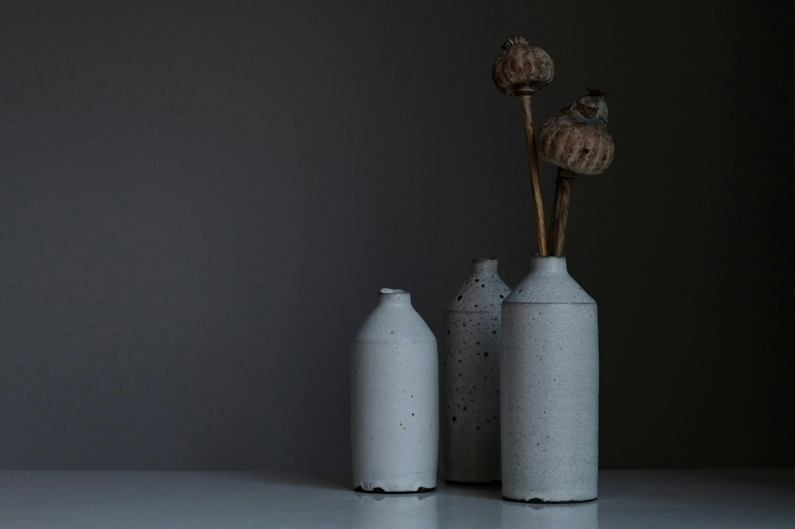

Làng nghề thủ công
Quế Võ, Bắc Ninh
Gốm Phù Lãng – Nghệ thuật men da lươn 700 năm bên bờ sông Cầu
Biên bản ủy quyền & đồng thuận cộng đồng:
Đã có biên bản thỏa thuận & ủy quyền truyền thông văn hóa từ Hội đồng Nghệ nhân Phù Lãng.
Đã kiểm duyệt: 10/10/2026
Khảo sát và số hóa bởi: Lê Minh Anh • ĐH Khoa học Xã hội & Nhân văn
1. Nguồn gốc & Lịch sử ngàn đời
Khởi nguồn từ thế kỷ 13 thời nhà Trần do quan Trạng Hứa Vĩnh Kiều truyền dạy, làng gốm Phù Lãng nằm nép mình bên dòng sông Cầu êm ả. Trải qua hơn 700 năm thăng trầm, đây là một trong ba dòng gốm cổ xưa bậc nhất miền Bắc còn giữ lửa nghề thủ công không pha lẫn.
2. Quy trình chế tác kỳ công
3. Tiếng nói người trong cuộc
Bác Phạm Văn Nam
Chủ cơ sở gốm Nam Phù Lãng • 42 năm giữ nghề“Gốm Phù Lãng không bóng bẩy tráng lệ, nó mang màu đất nâu ấm và khói rơm của làng quê Việt Nam.”